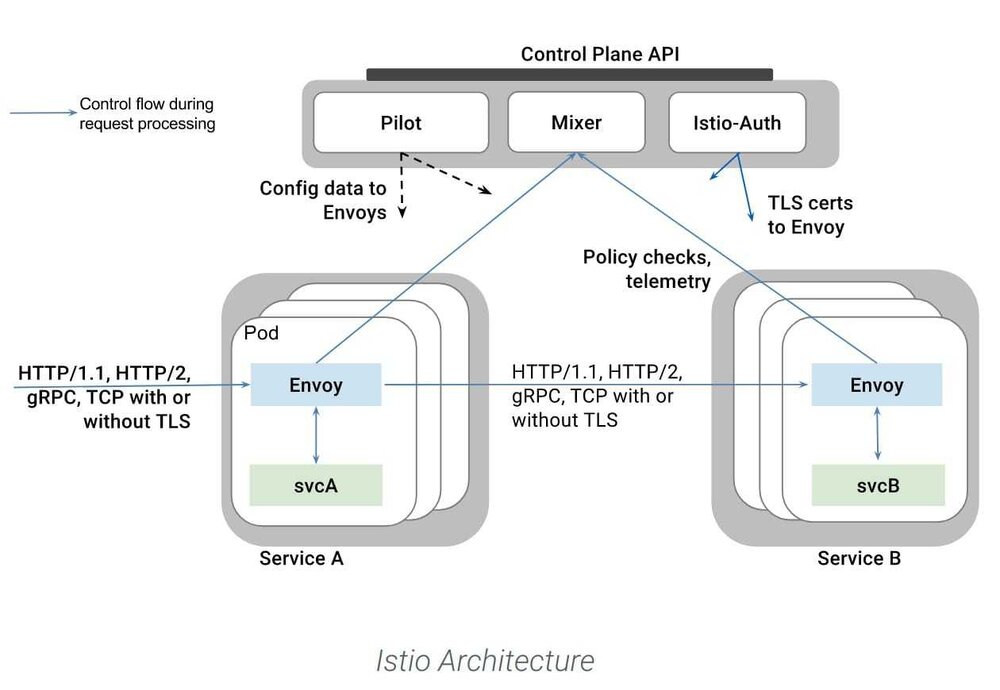
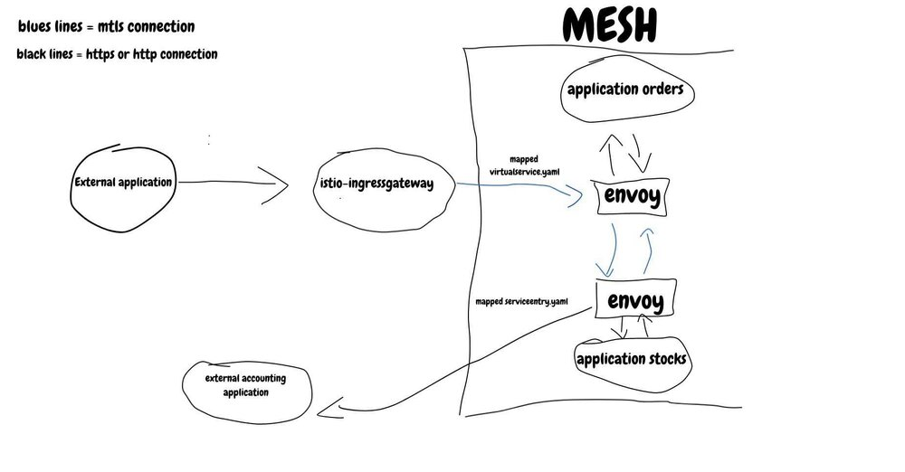
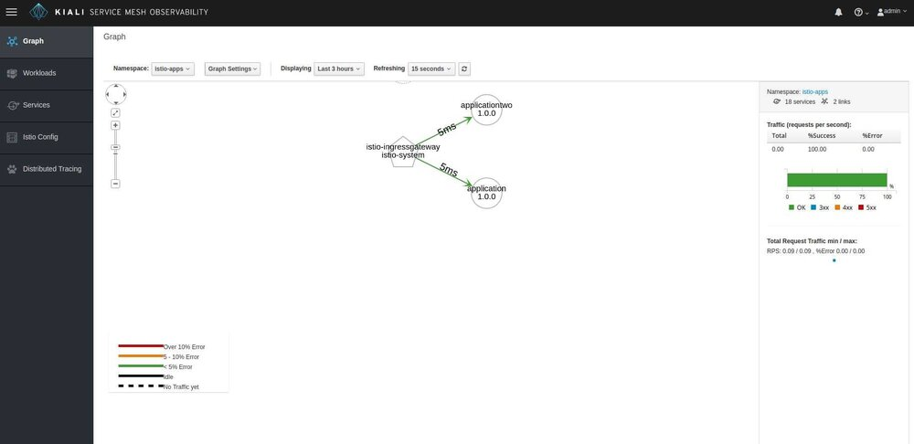
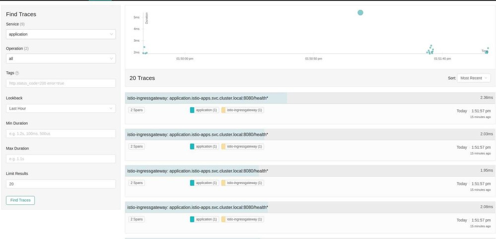
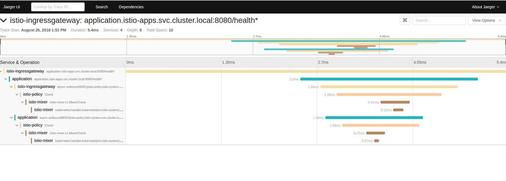

本文为翻译文章，点击查看原文。
在这个令人惊奇的时代，我们可以不需要编写一行代码，便可以很智能的集成应用程序，收集应用程序指标。
在这篇文章中，我将演示使用 helm 安装 Istio mtls 环境、必要的 yamls 配置以及安装 Istio 带来的其他收获。另外，在文章最后，我还会展示路由配置的一些例子。
假设你已经安装好 Kubernetes 和 helm，并且对他们都有一定的了解。本教程将以 AWS 作为我们的运行环境。请参考官方安装文档：
https://istio.io/docs/setup/kubernetes/helm-install/
以下是 Istio 的官方拓扑图：

通过我们的设置，所有的容器会连同一个 istio-proxy 一起创建并部署到 istio-injected 的命名空间中。应用程序将与 istio-proxy (envoy) 进行通信，然后后者将处理所有的链接、mtls 以及其他应用程序的负载均衡。
安装以及配置
开始步骤，下载并解压 istio-1.0.0 安装包
wget https://github.com/istio/istio/archive/1.0.0.zip\ && unzip 1.0.0.zip
修改 istio 目录下的 values.yaml 文件，修改环境需要的设置
istio-1.0.0/install/kubernetes/helm/istio/values.yaml
以下修改将使 istio ingressgateway 的 mtls、ingress（用于监控服务）和 ssl 端口（443）重定向到 80 端口，并支持插件到安装（grafana, servicegraph, jaeger and kiali）： 获取修改后到 values.yaml 文件，示例
修改完成后，安装所有的程序并查看 Istio 运行情况！
首先，如果使用 2.10.0 之前的 Helm 版本，可以通过 kubectl apply 安装 Istio 的自定义资源；如果不是这类版本，请跳过此步。
kubectl apply -f istio-1.0.0/install/kubernetes/helm/istio/templates/crds.yaml
kubectl apply -f istio-1.0.0/install/kubernetes/helm/istio/charts/certmanager/templates/crds.yaml
安装 Istio (请使用我们调整过的 values.yaml 文件)
helm install istio-1.0.0/install/kubernetes/helm/istio --name istio --namespace istio-system
检查你的 istio-system 命名空间，并查看 pods 是否可以展示出来！同时为你的应用程序创建一个命名空间：
kubectl create namespace istio-apps
现在可以为它加上标签，让 Istio 知道在哪里注入 istio-proxies。
kubectl label namespace istio-apps istio-injection=enabled
现在我们的环境已经运行起来，让我们思考一下应用程序是如何相互通信的。在网格中的服务通过 envoy 来处理双向通行和负载均衡以达到服务间相互通信。那些不在网格中的服务该如何处理呢？你可能想知道他们如何与我们的服务进行沟通，我们的服务如何与网格外部的服务进行通信。这就是我们配置入口的地方。下图将说明外部服务如何与网格内的应用进行联系的：

所有外部的流量将通过 Istio-ingressgateway 进入网格中，Istio-ingressgateway 会尝试查找网格内主机与路径匹配一致的虚拟服务。如果未查找到匹配的虚拟服务，则外部服务将访问不到网格内的应用程序。
提示：正是因为这样的虚拟服务，我们可以做到流量的管理！
对于网格中的服务需要访问外部的服务，例如：访问镜像中的存储应用，你还需要做虚拟服务的流量映射。
本教程中，我们可以使用下面的 yaml 文件（也可以指定 ips）访问网格中的所有主机：
apiVersion: networking.istio.io/v1alpha3
kind: ServiceEntry
metadata:
name: allhosts-serviceentry
namespace: istio-apps
spec:
hosts:
- "*"
ports:
- number: 80
name: http
protocol: HTTP
- number: 443
name: https
protocol: HTTPS
- number: 3306
name: tcp
protocol: TCP
我们需要确保 istio-ingressgateway 已经映射入 istio-apps 的命名空间中。首先，检查你的 istio-ingressgateway 服务，并指向由该服务创建的负载均衡器的域名。
使用下面的 yaml 配置映射你的域名到 istio-ingressgateway，教程中我们使用 *.yourdomain。在生产环境中需要一个个的映射你的主机（这步操作需要花费一些时间才能生效）：
apiVersion: networking.istio.io/v1alpha3
kind: Gateway
metadata:
name: istio-gateway
namespace: istio-apps
spec:
selector:
istio: ingressgateway
servers:
- port:
number: 80
name: http
protocol: HTTP
hosts:
- "*.yourdomain"
- port:
number: 443
name: https
protocol: HTTPS
tls:
mode: PASSTHROUGH
hosts:
- "*.yourdomain"
现在可以准备测试我们的环境了。我已经使用 http(8080)/grpc(8333) 创建了一个应用程序，在测试环境调用第二个应用程序。同时创建了一个部署服务的文件来启动测试。请复制下面的 yaml 文件并应用到你的环境中：
apiVersion: extensions/v1beta1
kind: Deployment
metadata:
name: application
spec:
replicas: 1
template:
metadata:
labels:
name: application
app: application
version: 1.0.0
spec:
serviceAccountName: default
containers:
- name: application
image: pismotest/istio-application:v1
ports:
- containerPort: 8080
name: http-port
- containerPort: 8333
name: grpc-port
---
apiVersion: v1
kind: Service
metadata:
name: application
spec:
ports:
- name: http
port: 8080
targetPort: 8080
- name: grpc-port
port: 8333
targetPort: 8333
selector:
name: application
---
apiVersion: extensions/v1beta1
kind: Deployment
metadata:
name: applicationtwo
spec:
replicas: 1
template:
metadata:
labels:
name: applicationtwo
app: applicationtwo
version: 1.0.0
spec:
serviceAccountName: default
containers:
- name: applicationtwo
image: pismotest/istio-application:v1
ports:
- containerPort: 8080
name: http-port
- containerPort: 8333
name: grpc-port
---
apiVersion: v1
kind: Service
metadata:
name: applicationtwo
spec:
ports:
- name: http
port: 8080
targetPort: 8080
- name: grpc-port
port: 8333
targetPort: 8333
selector:
name: applicationtwo
use kubectl apply -f applications.yaml -n istio-apps
现在，我们将创建我们的虚拟服务来映射到我们的应用程序，已便 istio-ingressgateway 可以将流量路由到我们的应用程序中（修改配置中的 application.yourdomain 修改为你的域名）
apiVersion: networking.istio.io/v1alpha3
kind: VirtualService
metadata:
name: application-ingress
namespace: istio-apps
spec:
hosts:
- "application.yourdomain"
gateways:
- istio-gateway
http:
- match:
- uri:
prefix: /health
route:
- destination:
port:
number: 8080
host: application
retries:
attempts: 25
perTryTimeout: 1s
- match:
- uri:
prefix: /
route:
- destination:
port:
number: 8333
host: application
retries:
attempts: 25
perTryTimeout: 1s
虚拟服务将主机映射到任何你想匹配的服务上，在示例中，第一条规则是匹配到服务 http 健康端点，如果匹配失败将跳转到 grpc 服务端口上。在重试的部分可以帮助我们知道网络是否有干扰或有不健康的 Pods。你可以添加更多你需要的匹配项，通过这些规则可以将任何形式的请求匹配到主机上：
- match:
- uri:
regex: ".+"
你可以尝试一下方式访问 /health 端点：
curl --request GET \
--url http://application.yourdomain/health
你将接收到200，同时你的应用也会记录接受到的请求。如果你接收到404，可能是你的虚拟服务没有将你的请求地址映射到你的服务上
请尝试如下方式：
curl --request GET \
--url http://application.yourdomain/health \
--header 'propagate: yes'
你的应用程序会请求第二个应用程序，请检查应用程序二的日志记录。
Istio 也可以使用同样的规则映射 grpc 请求。复制应用程序仓库并使用同样的方式创建应用，修改 main.go 中的域名地址并进行尝试。
https://github.com/Stocco/istioapplications
网格的可视化度量
有很多方法来可视化网格中的内容，我将在本节中列举几种。
请注意，Istio 将收集所有需要的度量参数来绘制监控图形和对象，但是对于像 Kiali 和 Jaeger 这样的度量服务，你需要确保应用程序可以传播 Istio injected 的请求头，这样就可以将应用程序的请求历史连接起来。
检查应用程序处理健康功能的示例： https://github.com/Stocco/istioapplications/blob/a3c3275a63a0667f870d054ea5940284b8a100af/main.go#L72
Kiali
Kiali 可以帮助我们了解实时发生的事情。将 kiali 端口暴露到本地，这样就可以查看应用程序：
kubectl -n istio-system port-forward $(kubectl -n istio-system get pod -l app=kiali -o jsonpath='{.items[0].metadata.name}') 20001:20001
点击链接并使用 admin(username)/admin(password) 登录：
http://localhost:20001/console/service-graph/istio-apps?layout=cose-bilkent&duration=10800&edges=responseTime95thPercentile&graphType=versionedApp
你可以看到如下界面:

这样就成功了，Kiali 还有很多工具有待挖掘。
Jaeger
Jaeger 是一个功能强大的监控工具，可以用来监听请求到执行情况以及请求在每个部分中执行的时长。但是，你需要注意的是，如果你需要使用它更多的潜在功能，你需要适当的调整你的代码来传播 Istio injected 的头。如果你需要了解更多关于请求的信息，你需要使用一些工具（例如：opentracing）来获取应用程序内部功能调用的度量数据。
暴露 jaeger 端口和访问权限 http://localhost:16686
kubectl port-forward -n istio-system $(kubectl get pod -n istio-system -l app=jaeger -o jsonpath='{.items[0].metadata.name}') 16686:16686

在左边的界面中有一些过滤条件，选择你需要的条件，你可以通过点击查找到的数据查看最新的跟踪路径。选择一条跟踪路径，你可以查看到应用程序中每一个请求的所消耗的准确时间。

如果在应用程序中安装了 opentracing 并在每个功能调用的地方都使用到了，则会有更好的体验。
更多的度量工具
现在有3个应用程序通过 values.yaml 已经安装好了，并使用 Istio 收集了需要度量的数据。尝试使用 grafana，prometheus和servicegraph 检查应用。
使用一下命令暴露应用程序：
kubectl -n istio-system port-forward $(kubectl -n istio-system get pod -l app=prometheus -o jsonpath='{.items[0].metadata.name}') 9090:9090
kubectl -n istio-system port-forward $(kubectl -n istio-system get pod -l app=grafana -o jsonpath='{.items[0].metadata.name}') 3000:3000 &
kubectl -n istio-system port-forward $(kubectl -n istio-system get pod -l app=servicegraph -o jsonpath='{.items[0].metadata.name}') 8088:8088 &
提示：
本教程中 grafana 登录/密码 是 admin/admin（可以在 values.yaml 修改他们），可以使用这个地址查看 servicegraph：
http://localhost:8088/force/forcegraph.html?time_horizon=3000s&filter_empty=true
智能路由
如果你可以管理应用程序的版本？Istio 可以为 virtualservice.yaml 提供微小的修改。让我们来调整我们的虚拟服务（修改 application.yourdomain 为你的应用程序名）
apiVersion: networking.istio.io/v1alpha3
kind: VirtualService
metadata:
name: application-ingress
namespace: istio-apps
spec:
hosts:
- "application.yourdomain"
gateways:
- istio-gateway
http:
- match:
- headers:
myself:
exact: "yourself"
route:
- destination:
port:
number: 8080
host: applicationtwo
- match:
- uri:
prefix: /health
route:
- destination:
port:
number: 8080
host: application
retries:
attempts: 25
perTryTimeout: 1s
- match:
- uri:
prefix: /
route:
- destination:
port:
number: 8333
host: application
retries:
attempts: 25
perTryTimeout: 1s
规则遵循优先顺序。现在可以使用前一章节中给的 curl 命令，并将头放到第一条规则中：
curl --request GET \
--url http://application.pismolabs.io/health \
--header 'myself: yourself'
你可以从第二个应用程序中查看到日志，而不是在第一个程序！这是因为第一条规则匹配到了。
Grpc ssl 目标规则
如果你在工作中使用过 grpc，你知道将 ssl 应用到 grpc 调用时会存在一个问题。主要是因为你需要将服务服务器的证书放入到代码中才能使 ssl 管道生效。如何在基础设置中设置一些配置达到这样的调用目标呢？
尝试为你的域名创建服务条目和目标规则，并查看你的非 ssl 应用程序对外部 grpc 服务进行了加密的调用！
apiVersion: networking.istio.io/v1alpha3
kind: ServiceEntry
metadata:
name: external-grpc-service-entry
spec:
hosts:
- application.yourdomain
ports:
- number: 8333
name: grpc-ssl
protocol: GRPC
---
apiVersion: networking.istio.io/v1alpha3
kind: DestinationRule
metadata:
name: originate-tls-grpc
spec:
host: application.yourdomain
trafficPolicy:
loadBalancer:
simple: ROUND_ROBIN
portLevelSettings:
- port:
number: 8333
tls:
mode: SIMPLE
有很多的服务条目和目标规则选项，你可以将他们结合起来为应用程序创建更丰富的环境。你可以通过下面的地址查看更多的信息。
https://istio.io/docs/reference/config/istio.networking.v1alpha3/#DestinationRule
我们只是初出茅庐
祝贺你，你已经获得了第一个 Istio 环境应用程序。现在，可以尝试将我的 deployment.yaml 替换成你自己的应用程序并查看它在 Istio 中的运行情况。
使用 Istio 可以获得很多额外的好处，例如特殊的目标规则，自定义策略和自定义度量，但这是下一章的主题。
如果您对本教程有任何疑问、建议或反馈，请随时添加任何意见并与我联系！
社区见！